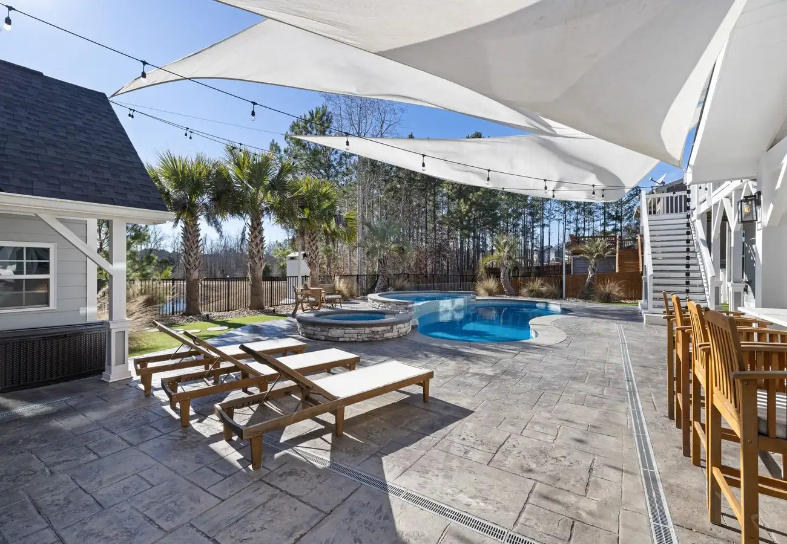

San Marcos
5.9 miles west

North County San Diego
What to know about Escondido before you buy a home here.
Neighborhoods
Escondido splits into four parts. Here is what you will find in each one.
Downtown and Central Escondido
Centered on Grand Avenue, east of I-15. The City's downtown plan covers about 475 acres around the historic shops and restaurants.
A historic district a few blocks south of Grand Avenue, with about 900 homes from Craftsman bungalows to Victorians. Exterior changes need a certificate of appropriateness.
An 11-acre area near downtown between Valley Parkway and Fourth Avenue, planned around restaurants, shops and cultural events.
North Escondido
A 980-acre master plan in the northwest, at the end of Woodland Parkway, north of El Norte Parkway.
A 418-acre plan in the northeast, reached from East Valley Parkway, with Ryan Community Park as its center.
East Escondido
Also called Rancho San Pasqual. A planned community off Cloverdale and Rockwood Roads, built around a golf course, with a public park on Rockwood Road.
Homes grouped on the level ground off Hidden Trails Road, with steeper open space and farmland around them.
A small plan off Rockwood Road, adopted in 2001, with most of the land left as open space.
South Escondido
A planned community on both sides of Via Rancho Parkway, west of I-15, and at Bear Valley Parkway and San Pasqual Road.
The City's largest regional park, on Bear Valley Parkway, with the sports center and Queen Califia's Magical Circle.
A corridor running 2.25 miles south from Fifth Avenue to Centre City Parkway, with its own City neighborhood plan.

Leticia's Picks
[Leticia: where she sends people for coffee, dinner and a walk.]
Living Here
The places people in Escondido go on a weekend.
Escondido's oldest park, at 321 North Broadway, with a working barn, the Santa Fe depot and a blacksmith shop.
The local history museum inside Grape Day Park, with the depot, an 1890 Victorian house and the blacksmith shop.
A City conservation area north of Dixon Lake, open dawn to dusk, with trails for hiking, biking and horseback riding.
The City's lake at 1700 La Honda Drive, with fishing, boating, camping and picnic areas.
The City's largest regional park, at 3333 Bear Valley Parkway, with an outdoor amphitheater and a skate park.
Queen Califia's Magical Circle
A sculpture garden by Niki de Saint Phalle inside Kit Carson Park, her last major international project.
California Center for the Arts, Escondido
A concert hall, theater and art museum on North Escondido Boulevard.
Down Highway 78 in the San Pasqual Valley. It sits inside the City of San Diego, just outside Escondido.
Shopping and Dining
Shops, restaurants and the 2nd Saturday art walk along Grand Avenue.
Formerly Westfield North County, at 272 East Via Rancho Parkway, with Target, Macy's and The Cheesecake Factory.
Tuesday afternoons on Juniper Street between Grand Avenue and Valley Parkway, run by the Escondido Arts Partnership.
Art, crafts, gifts and jewelry by regional makers, at 262 East Grand Avenue.
A downtown boutique with gifts, clothing and accessories from local vendors.
Gifts, plants and flowers on West El Norte Parkway.
Irish pub at 118 East Grand Avenue, with live music on weekends.
A family-owned burger place in downtown, with San Diego craft beer and hand-mixed shakes.
A family-owned Mexican seafood restaurant on North Broadway.
Tacos and craft beer on West Valley Parkway.
Gelato, coffee and panini at 122 South Kalmia Street.
A family winery in Highland Valley with pizza and a patio. It has an Escondido address.
Schools
Five school districts serve Escondido, and the address decides which one. Confirm with the district before you buy.
Kindergarten to grade 8. Serves most of the city. District site.
Grades 9 to 12. Serves most of the city. Find your school.
Kindergarten to grade 8. Serves a small part of the city. District site.
Kindergarten to grade 12. Serves a small part of the city. District site.
Preschool to grade 12. Serves a small part of the city.
The Commute
The Sprinter rail line, Interstate 15 and Highway 78 all come together in Escondido.
796 West Valley Parkway, the eastern end of the line. Also served by BREEZE buses and MTS Rapid 235 to downtown San Diego.
2121 Barham Drive.
I-15 runs south to San Diego and north to Temecula. Highway 78 runs west to Oceanside. The I-15 Express Lanes start at Highway 78.
Road miles from Escondido City Hall, without traffic.
Before You Buy
Check these on any home before you write an offer.
01
The City lists the Mello-Roos districts it knows of on its Community Facilities Districts page. Other agencies can have their own, so read the tax bill from the County Treasurer-Tax Collector for the address.
02
Look up the address on CAL FIRE's fire hazard severity zone maps and FEMA's flood maps.
03
Every homeowner there needs a certificate of appropriateness before exterior changes, even for paint, windows or a fence. See the City's Historic Preservation page. A home with a Mills Act contract has its own terms to read.
04
Hidden Meadows, Harmony Grove, Del Dios and Elfin Forest are unincorporated, so the County handles permits there. Water comes from the City or from Rincon del Diablo Municipal Water District, depending on the address. Confirm the school district for the address too.
Your Escondido Agent
Tell Leticia which Escondido neighborhoods you are weighing, and she will go through each one with you.
City services, planning and parks
Local businesses and events
Downtown Escondido Business Association
Shops, events and the 2nd Saturday art walk
Property records and tax information
Nearby